Exploratory Data Analysis
Salaries Data import and cleaning
Descrition of data cleaning:
reading in data
selecting and renaming the columns
since names are in last, first format, reorder them to be first last
make sure all “Jr”s go at the end
remove accents using stringi::stri_trans_general
salaries = read_excel(
"data/MLB-Salaries 2000-24.xlsx",
sheet = "2022.xls",
skip = 1) |>
select(1:4) |>
rename(position = "Pos'n",
salary_2022 = "2022.0",
service_time_yrs = "MLS",
name = "Player") %>%
mutate(name = str_split(name, ","),
name = map(name, rev),
name = map_chr(name, str_c, collapse = " "),
name = str_trim(name),
name = str_replace_all(name, "[*#\\.,]", ""),
junior = str_detect(name, "Jr"),
name = if_else(junior == TRUE, str_remove(name, " Jr"), name),
name = if_else(junior == TRUE, str_c(name, " Jr"), name),
name = stringi::stri_trans_general(name,id = "Latin-ASCII")) |>
select(-junior) %>%
mutate(simple_position = str_split_i(position, "-", 1),
simple_position = fct_relevel(simple_position,
c("c", "1b", "2b", "3b", "ss",
"lf", "cf", "rf", "inf", "of",
"dh", "rhp", "lhp")),
service_time_floor = floor(service_time_yrs))Batting and Pitching data import and cleaning
Batting
Descrition of data cleaning:
reading in data and clean names
grouping by name and using a count to ensure we only end up with one of each name (slightly complicated due to interleague trades and potential for players with the same name)
remove whitespace, from names and use stringi again to remove accents so that the formatting exactly matches the salaries tibble
Filter out those with fewer than 100 plate appearances
batting = read_delim("data/2022 MLB Player Stats - Batting.csv", delim = ";",
locale = locale(encoding = "latin1")) |>
janitor::clean_names() %>%
group_by(name) |>
mutate(name_count = n(),
keep_row = case_when(name_count == 1 ~ TRUE,
name_count > 1 & tm == "TOT" ~ TRUE,
.default = FALSE)) |>
filter(keep_row == TRUE) %>%
mutate(name_count = n(),
keep_row = case_when(name_count == 1 ~ TRUE,
name_count > 1 & lg == "MLB" ~ TRUE,
.default = FALSE)) |>
ungroup() |>
filter(keep_row == TRUE) %>%
mutate(name = str_split(name, "\\s+"),
name = map_chr(name, str_c, collapse = " "),
name = str_trim(name),
name = str_replace_all(name, "[*#\\.]", ""),
name = stringi::stri_trans_general(name,id = "Latin-ASCII"))
merged_batting <- salaries |>
mutate(simple_position = str_split_i(position, "-", 1)) |>
filter(!simple_position %in% c("rhp","lhp")) |>
inner_join(batting, by = "name") |>
filter(pa >= 100)
salary_not_in_batting <- anti_join(salaries, batting, by = "name")
batting_not_in_salary <- anti_join(batting, salaries, by = "name")Pitching
(same data cleaning process as above)
pitching = read_delim("data/2022 MLB Player Stats - Pitching.csv", delim = ";",
locale = locale(encoding = "latin1")) |>
janitor::clean_names() %>%
group_by(name) |>
mutate(name_count = n(),
keep_row = case_when(name_count == 1 ~ TRUE,
name_count > 1 & tm == "TOT" ~ TRUE,
.default = FALSE)) |>
filter(keep_row == TRUE) %>%
mutate(name_count = n(),
keep_row = case_when(name_count == 1 ~ TRUE,
name_count > 1 & lg == "MLB" ~ TRUE,
.default = FALSE)) |>
ungroup() |>
filter(keep_row == TRUE) %>%
mutate(name = str_split(name, "\\s+"),
name = map_chr(name, str_c, collapse = " "),
name = str_trim(name),
name = str_replace_all(name, "[*#\\.]", ""),
name = stringi::stri_trans_general(name,id = "Latin-ASCII"))
merged_pitching <- inner_join(salaries, pitching, by = "name") |>
filter(ip >= 20) |>
separate(ip, into = c("ip", "ip_dec"), remove = FALSE, convert = TRUE) |>
mutate(ip_dec_333 = ifelse(is.na(ip_dec), 0, ip_dec * 333) ,
ip_total = paste(ip, ip_dec_333, sep = "."),
ip_total = as.numeric(ip_total)) |>
select(-ip, -ip_dec, -ip_dec_333) |>
separate(position, into = c("hand", "pitcher_type")) |>
mutate(pitcher_type = ifelse(is.na(pitcher_type), "r", pitcher_type)) |>
filter(hand == "lhp" | hand == "rhp")
salary_not_in_pitching <- anti_join(salaries, pitching, by = "name")
pitching_not_in_salary <- anti_join(pitching, salaries, by = "name")Note that there are a number of names in salaries not
found in batting or pitching, and vice versa.
Some of this may be genuine missingness (e.g. salaries has fewer rows
than pitching and batting combined), but some is also due to alternative
spellings of names in the datasets. Possibly could be fixed using other
matching methods, but the analysis pipeline will still work from
here.
Salaries EDA
Some Basic EDA for salaries on their own
Service time (i.e. number of years of experience)
salaries |>
count(service_time_floor) |>
ggplot(aes(x = service_time_floor, y = n)) +
geom_col() +
labs(title = "Number of Players per Year of Experience",
x = "Years in the MLB",
y = "Number of Players") +
scale_x_continuous(breaks = seq(0,21,by=1)) +
theme_bw()salaries %>%
group_by(service_time_floor) %>%
filter(service_time_floor < 4)## # A tibble: 866 × 6
## # Groups: service_time_floor [4]
## name position service_time_yrs salary_2022 simple_position
## <chr> <chr> <dbl> <dbl> <fct>
## 1 Juan Soto lf 3.13 17100000 lf
## 2 Yusei Kikuchi lhp-s 3 16000000 lhp
## 3 Ronald Acuna lf 3.16 15000000 lf
## 4 Ke'Bryan Hayes 3b 1.08 10000000 3b
## 5 Seiya Suzuki of 0 8000000 of
## 6 Vladimir Guerrero Jr 3b 2.16 7900000 3b
## 7 Pete Alonso 1b 3 7400000 1b
## 8 Eloy Jimenez rf 3 7333333 rf
## 9 Walker Buehler rhp 3.17 7250000 rhp
## 10 Max Fried lhp-s 3.15 6850000 lhp
## # ℹ 856 more rows
## # ℹ 1 more variable: service_time_floor <dbl>This is right skewed, so may need to transform it if used in regression
Salary
salaries |>
ggplot(aes(x = salary_2022)) +
geom_density() +
labs(title = "2022 Salary Distribution",
x = "2022 Salary",
y = "") +
scale_x_continuous(labels = label_comma()) +
theme_bw()salaries |>
mutate(position_group = case_match(simple_position,
c("rhp","lhp") ~ "pitcher",
c("cf","lf","rf","of") ~ "outfield",
"dh" ~ "dh",
.default = "infield")) |>
ggplot(aes(x = salary_2022, color = position_group)) +
geom_density() +
labs(title = "Salary by Position Group",
x = "2022 Salary",
y = "") +
scale_x_continuous(labels = label_comma()) +
scale_color_discrete(name = "Position Group",
labels = c("Designated Hitter",
"Infield",
"Outfield",
"Pitcher")) +
theme_bw()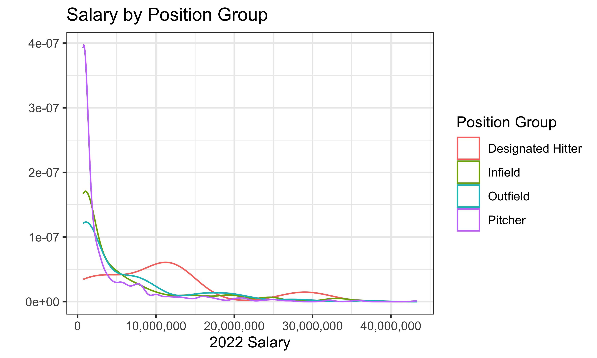 This is also heavily right skewed, with many players having salary under $1,000,000
Position type table
merged_batting |>
count(simple_position) |>
mutate(simple_position = fct_infreq(simple_position,w = n)) |>
ggplot(aes(x = simple_position, y = n)) +
geom_col() +
labs(title = "Players per Position",
x = "",
y = "Number of Players") +
scale_x_discrete(guide = guide_axis(angle = 75),
labels = c("1b" = "1st Base",
"2b" = "2nd Base",
"3b" = "3rd Base",
"inf" = "Infield",
"c" = "Catcher",
"rf" = "Right Field",
"lf" = "Left Field",
"cf" = "Center Field",
"of" = "Outfield",
"lhp" = "Left Hand Pitcher",
"rhp" = "Right Hand Pitcher",
"dh" = "Designated Hitter",
"ss" = "Shortstop")) +
theme_bw()salaries %>%
mutate(position_group = case_match(simple_position,
c("rhp","lhp") ~ "pitcher",
c("cf","lf","rf","of") ~ "outfield",
"dh" ~ "dh",
.default = "infield")) %>%
ggplot(aes(x=position_group, y=service_time_floor)) +
geom_boxplot()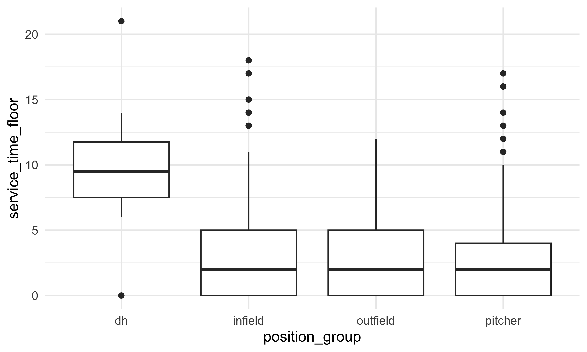
salaries %>%
mutate(position_group = case_match(simple_position,
c("rhp","lhp") ~ "pitcher",
c("cf","lf","rf","of") ~ "outfield",
"dh" ~ "dh",
.default = "infield")) %>%
ggplot(aes(x=position_group, y=salary_2022)) +
geom_boxplot()salaries %>%
mutate(position_group = case_match(simple_position,
c("rhp","lhp") ~ "pitcher",
c("cf","lf","rf","of") ~ "outfield",
"dh" ~ "dh",
.default = "infield")) %>%
filter(service_time_floor<=10) %>%
ggplot(aes(x=as.factor(service_time_floor),
y=salary_2022, color=position_group)) +
geom_point()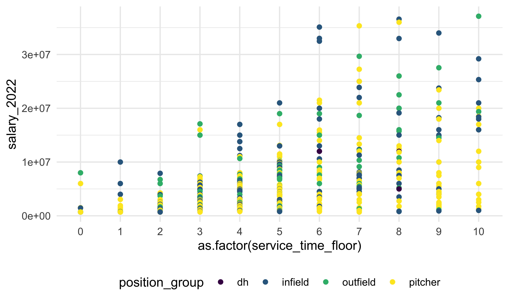
# playing a round with some idea, don't know if some of these are gonna be worth keepingSalaries by Position Boxplots
salaries %>%
ggplot(aes(x = simple_position, y = salary_2022)) +
geom_boxplot() +
labs(title = "Distribution of Salary by Position",
x = "",
y = "") +
scale_x_discrete(guide = guide_axis(angle = 75),
labels = c("1b" = "1st Base",
"2b" = "2nd Base",
"3b" = "3rd Base",
"inf" = "Infield",
"c" = "Catcher",
"rf" = "Right Field",
"lf" = "Left Field",
"cf" = "Center Field",
"of" = "Outfield",
"lhp" = "Left Hand Pitcher",
"rhp" = "Right Hand Pitcher",
"dh" = "Designated Hitter",
"ss" = "Shortstop")) +
scale_y_continuous(labels = label_comma()) +
theme_bw()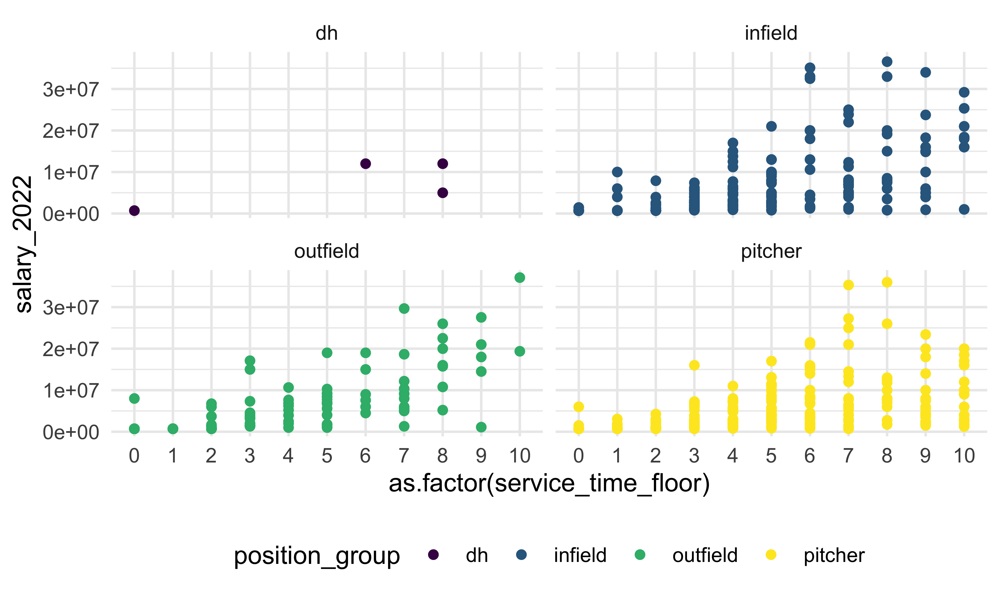
salaries %>%
ggplot(aes(x = simple_position, y = service_time_floor)) +
geom_boxplot() +
labs(title = "Distribution of Experience by Position",
x = "",
y = "") +
scale_x_discrete(guide = guide_axis(angle = 75),
labels = c("1b" = "1st Base",
"2b" = "2nd Base",
"3b" = "3rd Base",
"inf" = "Infield",
"c" = "Catcher",
"rf" = "Right Field",
"lf" = "Left Field",
"cf" = "Center Field",
"of" = "Outfield",
"lhp" = "Left Hand Pitcher",
"rhp" = "Right Hand Pitcher",
"dh" = "Designated Hitter",
"ss" = "Shortstop")) +
scale_y_continuous(labels = label_comma()) +
theme_bw()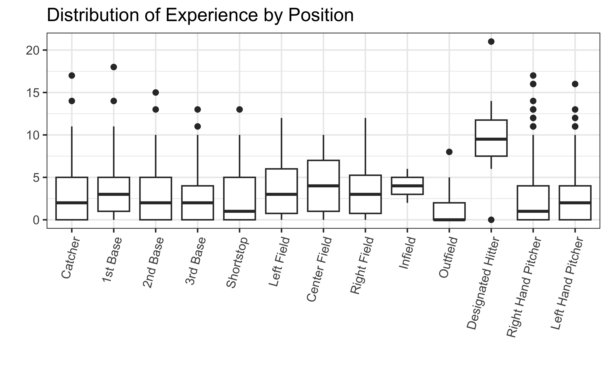
Infielders vs. outfielders vs. pitchers?
salaries |>
mutate(position_group = case_match(simple_position,
c("rhp","lhp") ~ "pitcher",
c("cf","lf","rf","of") ~ "outfield",
"dh" ~ "dh",
.default = "infield")) |>
ggplot(aes(x = position_group, y = salary_2022)) +
geom_boxplot()Salaries by Experience
salaries %>%
ggplot(aes(x = factor(service_time_floor), y = salary_2022)) +
geom_boxplot() 
salaries %>%
group_by(service_time_floor) %>%
summarize(avg_salary = mean(salary_2022, na.rm = TRUE)) %>%
ggplot(aes(x = service_time_floor, y = avg_salary)) +
geom_col() 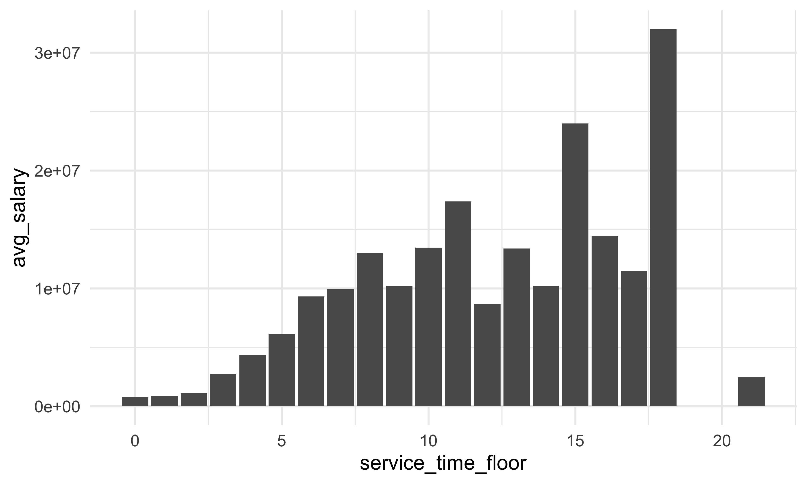
salaries |>
ggplot(aes(x = service_time_floor, y = salary_2022)) +
geom_point(alpha = 0.5) 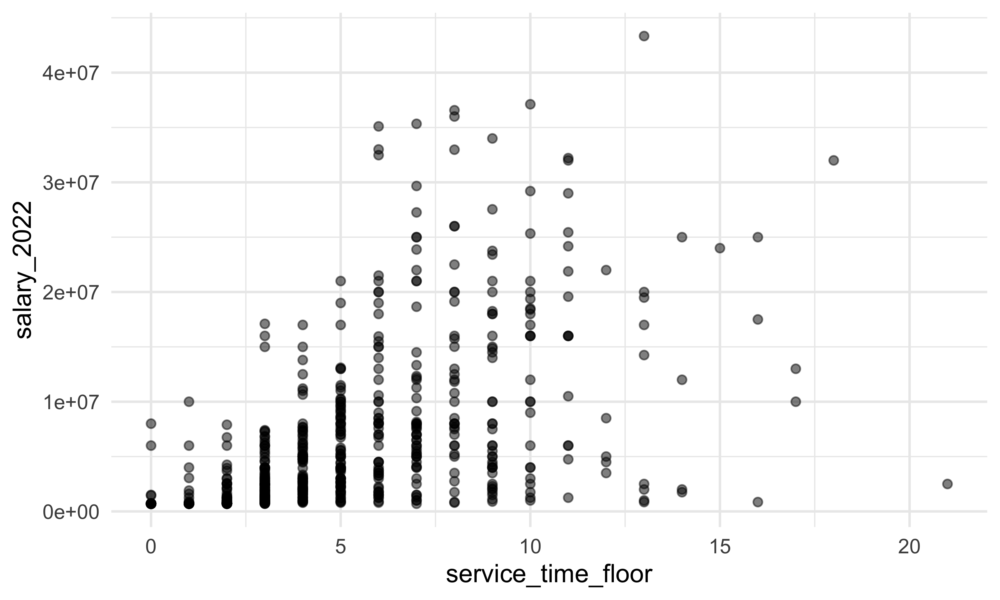
Positions by Experience
salaries %>%
ggplot(aes(x=floor(service_time_yrs),fill = simple_position)) +
geom_bar(position = "fill") 
salaries |>
ggplot(aes(x = service_time_floor,
y = simple_position,
fill = simple_position)) +
ggridges::geom_density_ridges(alpha = 0.5) +
labs(title = "Experience by Position",
x = "Years of Experience",
y = "") +
xlim(0,25) +
scale_y_discrete(labels = c("1b" = "1st Base",
"2b" = "2nd Base",
"3b" = "3rd Base",
"inf" = "Infield",
"c" = "Catcher",
"rf" = "Right Field",
"lf" = "Left Field",
"cf" = "Center Field",
"of" = "Outfield",
"lhp" = "Left Hand Pitcher",
"rhp" = "Right Hand Pitcher",
"dh" = "Designated Hitter",
"ss" = "Shortstop")) +
scale_fill_discrete(name = "Position",
labels = c("1b" = "1st Base",
"2b" = "2nd Base",
"3b" = "3rd Base",
"inf" = "Infield",
"c" = "Catcher",
"rf" = "Right Field",
"lf" = "Left Field",
"cf" = "Center Field",
"of" = "Outfield",
"lhp" = "Left Hand Pitcher",
"rhp" = "Right Hand Pitcher",
"dh" = "Designated Hitter",
"ss" = "Shortstop")) +
theme_bw()Salary Distribution by Experience
salaries %>%
ggplot(aes(x=factor(floor(service_time_yrs)), y=salary_2022)) +
geom_boxplot() +
labs(title = "Salary Distribution for Years of Experience",
x = "Years of Experience",
y = "") +
scale_y_continuous(labels = label_comma()) +
theme_bw()
Batting EDA
Distributions of variables
Looking at some hitting statistics
merged_batting |>
ggplot(aes(x = hr)) +
geom_histogram() +
labs(title = "Distribution of Home Runs",
x = "Home Run Total",
y = "Players")merged_batting |>
ggplot(aes(x = rbi)) +
geom_histogram() +
labs(x = "Runs batted in (RBI)")
merged_batting %>%
ggplot(aes(x = ab,y= hr)) +
geom_point(aes(color = ops)) +
geom_smooth(method = lm, se = FALSE, color = "firebrick") +
labs(title = "Who is the most 'effective' at the plate?",
x = "Chances at Bat",
y = "Number of Home Runs") +
scale_color_continuous("OPS") +
theme_bw()
These are also right skewed so will need to normalize for any linear model.
OPS is an “all in one” statistic combining on-base percentage (OBP) and slugging (SLG).
OBP is calculated as \(\frac{Hits (H) + Walks (BB) + Hit by pitch (HBP)}{At \ bats (AB) + Walks (BB) + sacrifice \ flies (SF) + Hit by pitch (HBP)}\)
Slugging is calculated as \(\frac{total \ bases (TB)}{At \ bats (AB)}\)
OPS is the sum of these two statistics.
OPS+ (or adjusted OPS) is adjusted for the park and league averages.
merged_batting |>
ggplot(aes(x = ops)) +
geom_histogram() +
labs(x = "OPS")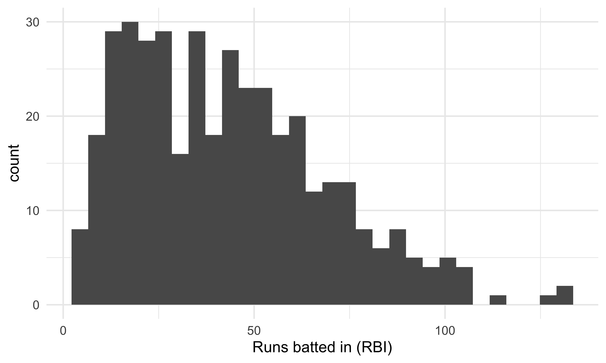
merged_batting |>
ggplot(aes(x = ops_2)) +
geom_histogram() +
labs(x = "OPS+")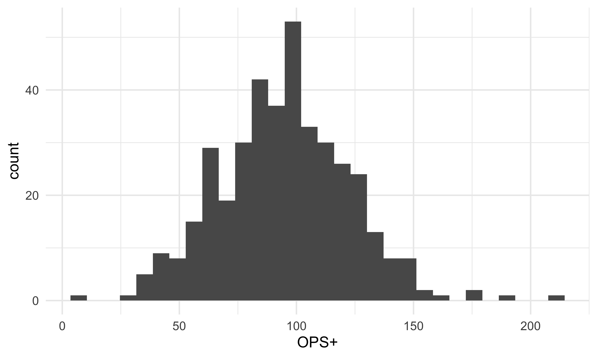
One idea might be to compare OPS or OPS+ to more traditional statistics, like RBIs, HRs, or batting averages to OPS or OPS+ as single predictors of salary.
One other factor to consider is the correlation between some of these variables
merged_batting |>
select(hr, rbi, pa, ba, ops) |>
GGally::ggpairs()
Some of these potential predictors are fairly strongly correlated (like RBI and HR, or BA and OPS), so it’s important not to include too many collinear variables in a potential linear model.
Relationship to salary
Looking at some relationships to salary
Position vs. salary
merged_batting |>
mutate(positions = str_split_i(position, "-",1)) |>
ggplot(aes(x = positions,y= salary_2022)) +
geom_boxplot()merged_batting |>
mutate(positions = str_split_i(position, "-",1)) |>
group_by(positions) |>
summarize(avg_salary = mean(salary_2022, na.rm = TRUE),
median_salary = median(salary_2022, na.rm = TRUE))## # A tibble: 11 × 3
## positions avg_salary median_salary
## <chr> <dbl> <dbl>
## 1 1b 8845755. 6225000
## 2 2b 5010094. 2550000
## 3 3b 8302384. 3375000
## 4 c 3669983. 1750000
## 5 cf 8145270. 5500000
## 6 dh 11857143. 12000000
## 7 inf 1312500 1312500
## 8 lf 6971404. 6125000
## 9 of 2211196. 746100
## 10 rf 7833411. 4875000
## 11 ss 7266837 4000000HR vs. salary
merged_batting |>
ggplot(aes(x = hr, y = salary_2022)) +
geom_point()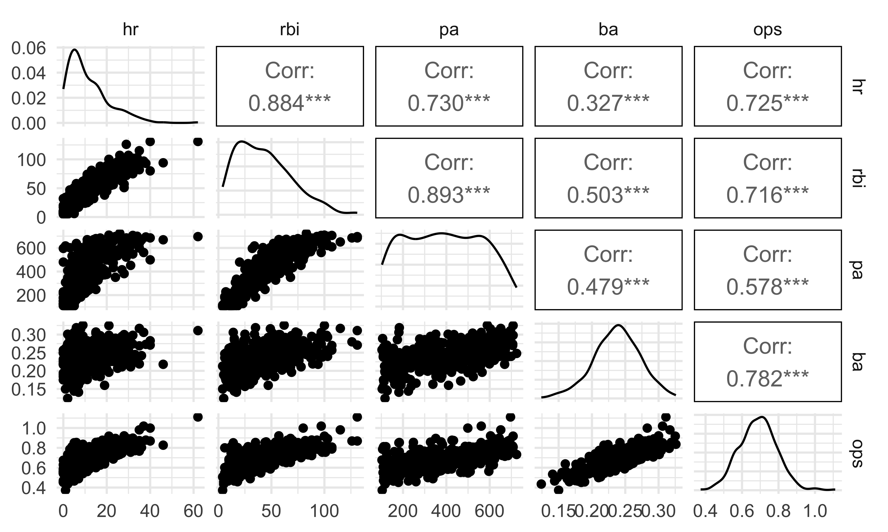
RBI vs. salary
merged_batting |>
ggplot(aes(x = rbi, y = salary_2022)) +
geom_point()
BA vs. salary
merged_batting |>
ggplot(aes(x = ba, y = salary_2022)) +
geom_point()
Plate appearances vs. salary
merged_batting |>
ggplot(aes(x = pa, y = salary_2022)) +
geom_point()OPS+ vs salary
merged_batting |>
ggplot(aes(x = ops_2, y = salary_2022)) +
geom_point()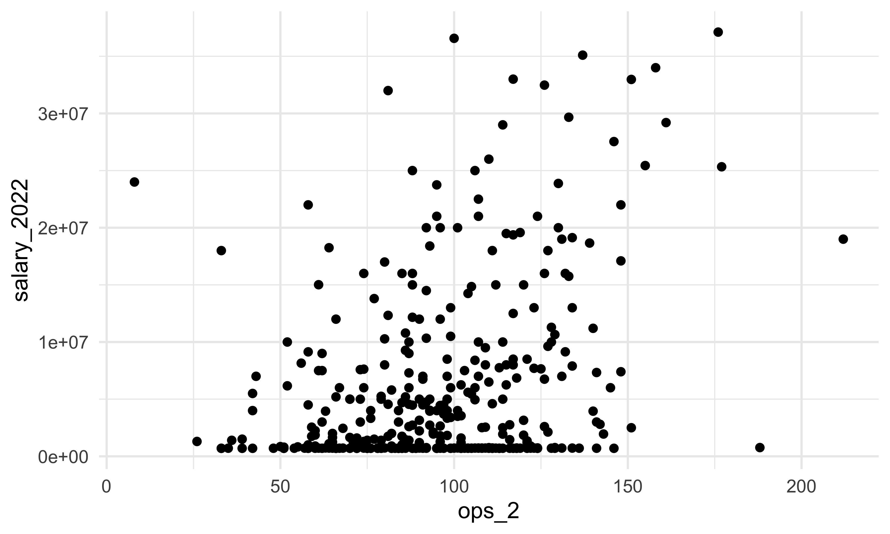
Some further ideas
merged_batting %>%
ggplot(aes(x = salary_2022, y = hr)) +
geom_point(data=transform(merged_batting, simple_position=NULL),
color = "grey", alpha = .5) +
geom_point(color = "firebrick") +
facet_wrap(vars(simple_position)) +
theme_bw()
# could be interesting, not sure if worth pursuing
yrs = merged_batting |>
ggplot(aes(x = service_time_floor, y = salary_2022)) +
geom_point() +
labs(x="Years of Experience",y="") +
scale_y_continuous(labels = label_comma()) +
theme_bw()
hrs = merged_batting |>
ggplot(aes(x = hr, y = salary_2022)) +
geom_point() +
guides(y="none") +
labs(x="Home Runs",y="") +
theme_bw()
bas = merged_batting |>
ggplot(aes(x = ba, y = salary_2022)) +
geom_point() +
labs(x="Batting Averages",y="") +
scale_y_continuous(labels = label_comma()) +
theme_bw()
ops = merged_batting |>
ggplot(aes(x = ops_2, y = salary_2022)) +
geom_point() +
guides(y="none") +
labs(x="OPS+",y="") +
theme_bw()
scatter_patch = (yrs+hrs)/(bas+ops)
scatter_patch + plot_annotation(title = "Scatterplot of Batting Statistics and Salary")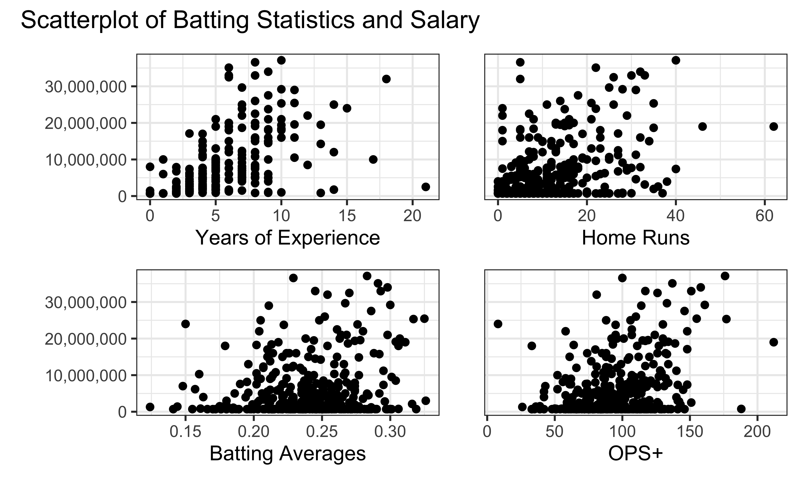
yrsCol = merged_batting |>
count(service_time_floor) |>
ggplot(aes(x = service_time_floor, y=n)) +
geom_col() +
labs(x="Years of Experience",y="") +
theme_bw()
hrsHist = merged_batting |>
ggplot(aes(x = hr)) +
geom_histogram() +
labs(x="Home Runs",y="") +
theme_bw()
basHist = merged_batting |>
ggplot(aes(x = ba)) +
geom_histogram() +
labs(x="Batting Averages",y="") +
theme_bw()
opsHist = merged_batting |>
ggplot(aes(x = ops_2)) +
geom_histogram() +
labs(x="OPS+",y="") +
theme_bw()
dist_patch = (yrsCol+hrsHist)/(basHist+opsHist)
dist_patch + plot_annotation(title = "Distribution of Important Batting Statistics")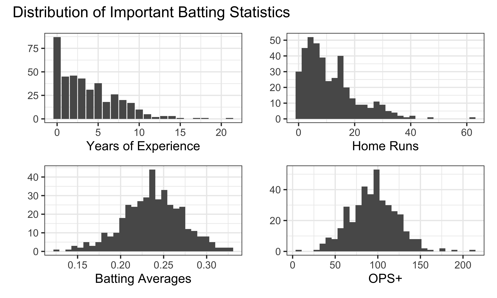
Since salary (and other variables) are very skewed, we may want to transform these data using a log transformation.
Regression models
Home runs
hr_fit <- lm(log10(salary_2022) ~ hr,
data = merged_batting)
hr_fit |>
broom::tidy()## # A tibble: 2 × 5
## term estimate std.error statistic p.value
## <chr> <dbl> <dbl> <dbl> <dbl>
## 1 (Intercept) 6.22 0.0445 140. 2.09e-310
## 2 hr 0.0206 0.00291 7.08 7.87e- 12OPS+
ops_fit <- lm(log10(salary_2022) ~ ops_2,
data = merged_batting)
ops_fit |>
broom::tidy()## # A tibble: 2 × 5
## term estimate std.error statistic p.value
## <chr> <dbl> <dbl> <dbl> <dbl>
## 1 (Intercept) 5.96 0.100 59.4 1.38e-185
## 2 ops_2 0.00531 0.00100 5.28 2.22e- 7Would also want to account for years of experience in predicting salary
experience_fit <- lm(log10(salary_2022) ~ service_time_floor,
data = merged_batting)
experience_fit |>
broom::tidy()## # A tibble: 2 × 5
## term estimate std.error statistic p.value
## <chr> <dbl> <dbl> <dbl> <dbl>
## 1 (Intercept) 5.98 0.0312 192. 0
## 2 service_time_floor 0.115 0.00562 20.5 6.59e-62An interesting question might be: is OPS+ (an “all-in-one” statistic) a better predictor of salary than traditional statistics?
To do this, I’m going to account for batting average, home runs per plate appearance. I’m also going to adjust for service time for both models, since that is strongly correlated with salary.
hr_ba_fit <- merged_batting |>
mutate(hr_per_pa = hr / pa) |>
lm(log10(salary_2022) ~ ba + hr_per_pa + service_time_floor,
data = _)
hr_ba_fit |>
broom::tidy()## # A tibble: 4 × 5
## term estimate std.error statistic p.value
## <chr> <dbl> <dbl> <dbl> <dbl>
## 1 (Intercept) 5.33 0.134 39.9 2.22e-132
## 2 ba 2.20 0.551 4.00 7.75e- 5
## 3 hr_per_pa 4.77 1.28 3.72 2.31e- 4
## 4 service_time_floor 0.113 0.00540 20.8 2.57e- 63hr_ba_fit |>
broom::glance()## # A tibble: 1 × 12
## r.squared adj.r.squared sigma statistic p.value df logLik AIC BIC
## <dbl> <dbl> <dbl> <dbl> <dbl> <dbl> <dbl> <dbl> <dbl>
## 1 0.585 0.581 0.361 164. 1.64e-66 3 -139. 288. 308.
## # ℹ 3 more variables: deviance <dbl>, df.residual <int>, nobs <int>plot(hr_ba_fit, which = 1)plot(hr_ba_fit, which = 2)ops_fit <- merged_batting |>
lm(log10(salary_2022) ~ ops_2 + service_time_floor,
data = _)
ops_fit |>
broom::tidy()## # A tibble: 3 × 5
## term estimate std.error statistic p.value
## <chr> <dbl> <dbl> <dbl> <dbl>
## 1 (Intercept) 5.55 0.0689 80.6 1.69e-228
## 2 ops_2 0.00455 0.000664 6.85 3.38e- 11
## 3 service_time_floor 0.113 0.00529 21.4 1.75e- 65ops_fit |>
broom::glance()## # A tibble: 1 × 12
## r.squared adj.r.squared sigma statistic p.value df logLik AIC BIC
## <dbl> <dbl> <dbl> <dbl> <dbl> <dbl> <dbl> <dbl> <dbl>
## 1 0.597 0.595 0.355 260. 4.72e-70 2 -134. 276. 291.
## # ℹ 3 more variables: deviance <dbl>, df.residual <int>, nobs <int>plot(ops_fit, which = 1)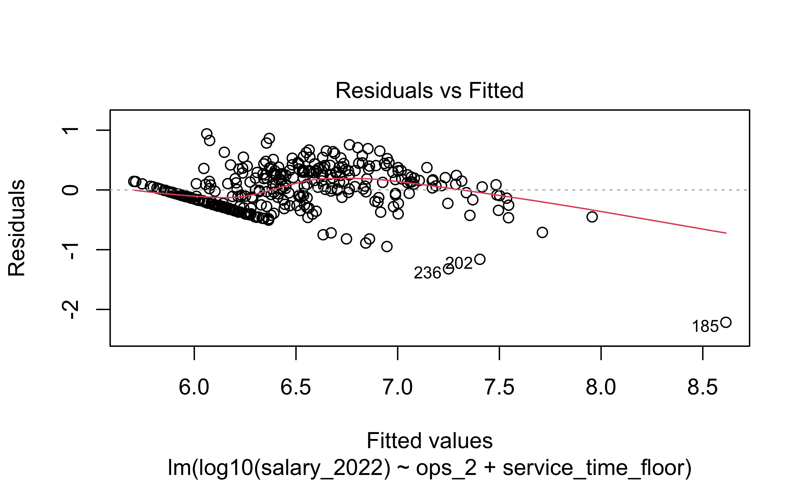
plot(ops_fit, which = 2)Based on these statistics, the model with than OPS+ is a better predictor than the one with home runs and batting average, which makes sense since OPS+ is internally accounting for more other factors.
Which players provided the best value for money?
merged_batting |>
modelr::add_predictions(ops_fit) |>
modelr::add_residuals(ops_fit) |>
arrange(resid) |>
select(name, salary_2022, service_time_floor, ops_2, pred, resid ) |>
mutate(expected_salary = 10^pred) |>
slice(1:10)## # A tibble: 10 × 7
## name salary_2022 service_time_floor ops_2 pred resid expected_salary
## <chr> <dbl> <dbl> <dbl> <dbl> <dbl> <dbl>
## 1 Albert Puj… 2500000 21 151 8.61 -2.22 410735252.
## 2 Jed Lowrie 850000 13 50 7.25 -1.32 17780138.
## 3 Kurt Suzuki 1750000 14 59 7.40 -1.16 25346063.
## 4 Alcides Es… 1000000 10 58 6.95 -0.947 8853328.
## 5 Robinson C… 900000 9 60 6.84 -0.889 6968403.
## 6 Marwin Gon… 1100000 9 64 6.86 -0.820 7266342.
## 7 Stephen Vo… 850000 8 64 6.75 -0.819 5600815.
## 8 Yordan Alv… 764600 2 188 6.63 -0.750 4300548.
## 9 Brandon Dr… 900000 5 122 6.67 -0.718 4706575.
## 10 Yadier Mol… 10000000 17 52 7.71 -0.711 51438079.The most cost-effective players were those who
Played well (high OPS+) but had low salaries.
Played poorly and had a lot of experience, but had low salaries.
Pitching EDA
In order to eliminate pitchers with very few appearances or position players (catchers, first basemen, etc.) who came in to pitch in blowouts, I filtered only for pitchers with at least 10 innings pitches.
Distribution of Innings Pitched
merged_pitching |>
ggplot(aes(x = ip_total)) +
geom_histogram(binwidth = 5, fill = "red", col = "black") +
labs(title = "Distribution of Innings Pitched, MLB Pitchers, 2022",
x = "Innings Pitched",
y = "Pitcher Count") +
theme_bw()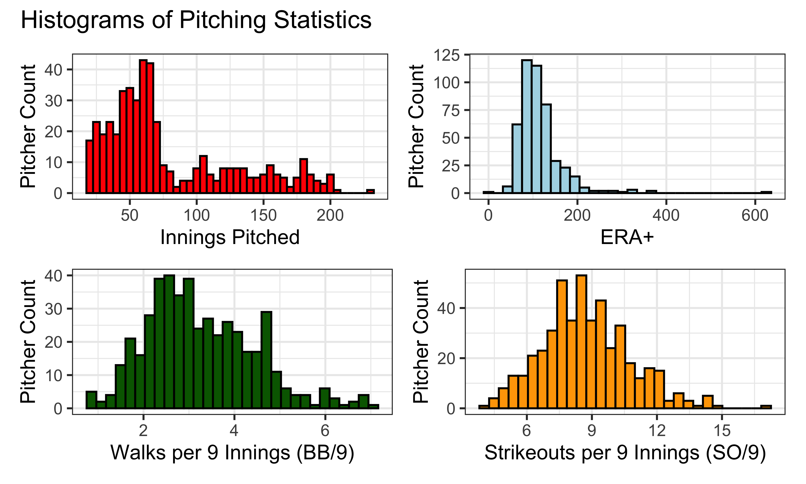
Distribution of ERA+
merged_pitching |>
ggplot(aes(x = era_2)) +
geom_histogram(fill = "lightblue", col = "black") +
labs(title = "Distribution of ERA+, MLB Pitchers, 2022",
x = "ERA+",
y = "") +
theme_bw()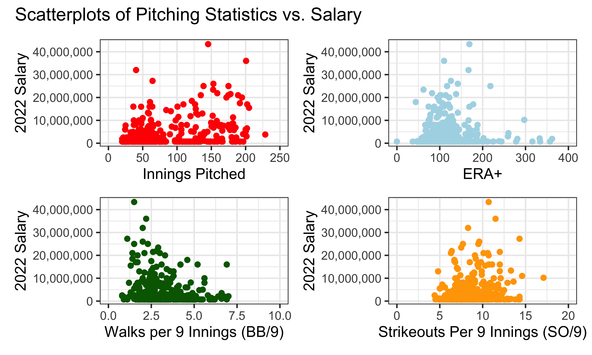
IP vs. Salary Plot
merged_pitching |>
ggplot(aes(x = ip_total, y = salary_2022)) +
geom_point() +
scale_x_continuous(lim = c(0, 250)) +
scale_y_continuous(labels = label_comma()) +
labs(title = "Innings Pitched by 2022 Salary",
x = "Innings Pitched",
y = "") +
theme_bw()ERA+ vs. Salary Plot
merged_pitching |>
ggplot(aes(x = era_2, y = salary_2022)) +
geom_point() +
scale_x_continuous(lim = c(0, 400))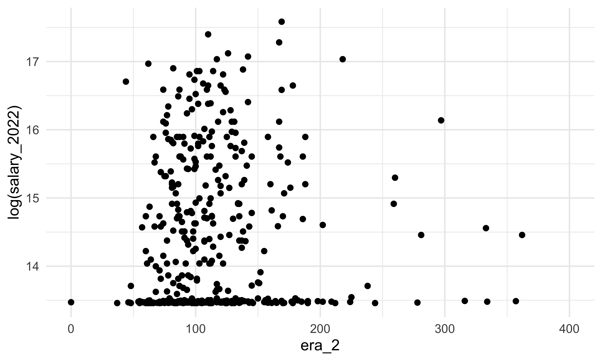
IP vs. Log Salary Plot
merged_pitching |>
ggplot(aes(x = ip_total, y = log(salary_2022))) +
geom_point() +
scale_x_continuous(lim = c(0, 400))
ERA+ vs. Log Salary Plot
merged_pitching |>
ggplot(aes(x = era_2, y = log(salary_2022))) +
geom_point() +
scale_x_continuous(lim = c(0, 400))
LMs
lm_ip = lm(salary_2022 ~ ip_total, data = merged_pitching)
summary(lm_ip)##
## Call:
## lm(formula = salary_2022 ~ ip_total, data = merged_pitching)
##
## Residuals:
## Min 1Q Median 3Q Max
## -7881584 -2346730 -1339157 542534 36868673
##
## Coefficients:
## Estimate Std. Error t value Pr(>|t|)
## (Intercept) 453710 505732 0.897 0.37
## ip_total 41360 5280 7.833 4e-14 ***
## ---
## Signif. codes: 0 '***' 0.001 '**' 0.01 '*' 0.05 '.' 0.1 ' ' 1
##
## Residual standard error: 5394000 on 417 degrees of freedom
## (50 observations deleted due to missingness)
## Multiple R-squared: 0.1283, Adjusted R-squared: 0.1262
## F-statistic: 61.35 on 1 and 417 DF, p-value: 4.002e-14lm_ip_data = tibble(fitted.values(lm_ip), residuals(lm_ip))
names(lm_ip_data) = c("fitted", "resid")
lm_ip_data |>
ggplot(aes(x = fitted, y = resid)) +
geom_point()view(lm_ip_data)lm_era_2 = lm(salary_2022 ~ era_2, data = merged_pitching)
summary(lm_era_2)##
## Call:
## lm(formula = salary_2022 ~ era_2, data = merged_pitching)
##
## Residuals:
## Min 1Q Median 3Q Max
## -4017039 -3088950 -2721275 385077 39372391
##
## Coefficients:
## Estimate Std. Error t value Pr(>|t|)
## (Intercept) 3560272 674783 5.276 2.12e-07 ***
## era_2 2371 5297 0.448 0.655
## ---
## Signif. codes: 0 '***' 0.001 '**' 0.01 '*' 0.05 '.' 0.1 ' ' 1
##
## Residual standard error: 5776000 on 417 degrees of freedom
## (50 observations deleted due to missingness)
## Multiple R-squared: 0.0004801, Adjusted R-squared: -0.001917
## F-statistic: 0.2003 on 1 and 417 DF, p-value: 0.6547lm_era_2_data = tibble(fitted.values(lm_era_2), residuals(lm_era_2))
names(lm_era_2_data) = c("fitted", "resid")
lm_era_2_data |>
ggplot(aes(x = fitted, y = resid)) +
geom_point()view(lm_era_2_data)Log-Transformed LMs
lm_ip_log = lm(log(salary_2022) ~ ip_total, data = merged_pitching)
summary(lm_ip_log)##
## Call:
## lm(formula = log(salary_2022) ~ ip_total, data = merged_pitching)
##
## Residuals:
## Min 1Q Median 3Q Max
## -1.8882 -0.7565 -0.4034 0.7288 3.1811
##
## Coefficients:
## Estimate Std. Error t value Pr(>|t|)
## (Intercept) 13.776177 0.097656 141.069 < 2e-16 ***
## ip_total 0.008032 0.001020 7.877 2.93e-14 ***
## ---
## Signif. codes: 0 '***' 0.001 '**' 0.01 '*' 0.05 '.' 0.1 ' ' 1
##
## Residual standard error: 1.042 on 417 degrees of freedom
## (50 observations deleted due to missingness)
## Multiple R-squared: 0.1295, Adjusted R-squared: 0.1274
## F-statistic: 62.05 on 1 and 417 DF, p-value: 2.933e-14lm_ip_log_data = tibble(fitted.values(lm_ip_log), residuals(lm_ip_log))
names(lm_ip_log_data) = c("fitted", "resid")
lm_ip_log_data |>
ggplot(aes(x = fitted, y = resid)) +
geom_point()view(lm_ip_log_data)lm_era_2_log = lm(log(salary_2022) ~ era_2, data = merged_pitching)
summary(lm_era_2_log)##
## Call:
## lm(formula = log(salary_2022) ~ era_2, data = merged_pitching)
##
## Residuals:
## Min 1Q Median 3Q Max
## -0.9979 -0.9559 -0.5614 0.8333 3.1417
##
## Coefficients:
## Estimate Std. Error t value Pr(>|t|)
## (Intercept) 1.441e+01 1.304e-01 110.497 <2e-16 ***
## era_2 1.869e-04 1.024e-03 0.183 0.855
## ---
## Signif. codes: 0 '***' 0.001 '**' 0.01 '*' 0.05 '.' 0.1 ' ' 1
##
## Residual standard error: 1.116 on 417 degrees of freedom
## (50 observations deleted due to missingness)
## Multiple R-squared: 7.994e-05, Adjusted R-squared: -0.002318
## F-statistic: 0.03334 on 1 and 417 DF, p-value: 0.8552lm_era_2_data_log = tibble(fitted.values(lm_era_2_log), residuals(lm_era_2_log))
names(lm_era_2_data_log) = c("fitted", "resid")
lm_era_2_data_log |>
ggplot(aes(x = fitted, y = resid)) +
geom_point()
Final Pitching LM
lm_pitching = lm(salary_2022 ~ hand + pitcher_type + hand*pitcher_type + ip_total + era_2,
data = merged_pitching)
summary(lm_pitching)##
## Call:
## lm(formula = salary_2022 ~ hand + pitcher_type + hand * pitcher_type +
## ip_total + era_2, data = merged_pitching)
##
## Residuals:
## Min 1Q Median 3Q Max
## -9175137 -1716370 -699492 602203 35065484
##
## Coefficients:
## Estimate Std. Error t value Pr(>|t|)
## (Intercept) 15005127 4956120 3.028 0.00262 **
## handrhp -8606379 5351662 -1.608 0.10857
## pitcher_typer -14812000 4970647 -2.980 0.00305 **
## pitcher_types -8591542 5028351 -1.709 0.08828 .
## ip_total 16873 5758 2.930 0.00357 **
## era_2 4389 4639 0.946 0.34466
## handrhp:pitcher_typer 8656223 5386994 1.607 0.10885
## handrhp:pitcher_types 7266736 5438133 1.336 0.18221
## ---
## Signif. codes: 0 '***' 0.001 '**' 0.01 '*' 0.05 '.' 0.1 ' ' 1
##
## Residual standard error: 4937000 on 411 degrees of freedom
## (50 observations deleted due to missingness)
## Multiple R-squared: 0.2803, Adjusted R-squared: 0.268
## F-statistic: 22.87 on 7 and 411 DF, p-value: < 2.2e-16From our model, we can see that relief pitchers have significantly
lower salaries than closing pitchers, which makes sense, since closing
pitchers have very strong reputations as some of the most effective
pitchers in the game and therefore will draw high salaries.
Additionally, the era_2 predictor, even when accounting for
pitcher handedness, pitcher type, and the number of innings pitched, has
an insignificant \(P\)-value, implying
that there is no significant association between one of the most highly
regarded summative statistics for pitching effectiveness and pitcher
salary.